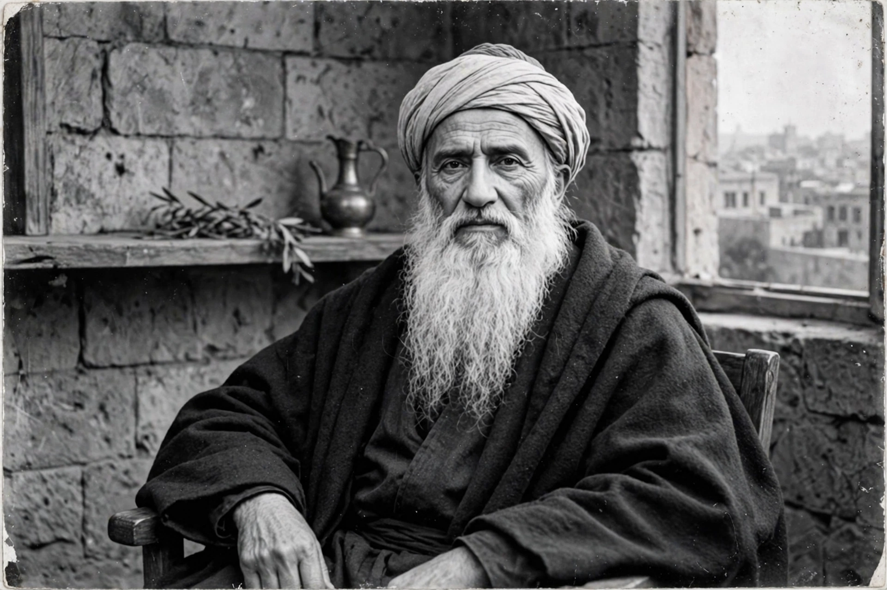

From Wikipedia, the free encyclopedia
| Baháʼu'lláh | |
|---|---|
| Born | 12 November 1817, Tehran, Persia |
| Died | 29 May 1892, Acre, Ottoman Palestine |
| Known for | Founder of the Baháʼí Faith |
| Major works | Kitáb-i-Aqdas (Book of Laws); Kitáb-i-Íqán; The Hidden Words |

Baháʼu'lláh (1817–1892), born Mírzá Ḥusayn-ʻAlí Núrí, was the founder of the Baháʼí Faith. A Persian nobleman who became a follower of the Báb, he was imprisoned in Tehran's 'Black Pit', exiled successively to Baghdad, Constantinople, Adrianople and finally the prison-city of Acre, where he died. In Baghdad in 1863 he declared himself the Messenger foretold by the Báb; his writings — laws, mystical works, and letters to kings and popes — form the core of Baháʼí scripture.
Baháʼu'lláh taught the oneness of God, of religion (progressive revelation) and of humanity, prescribing the abolition of prejudice, equality of women and men, universal education, a world commonwealth and the harmony of science and religion. His shrine at Bahji, near Acre, is the point toward which Baháʼís turn in prayer; photographs of him are treated with great reverence and displayed only in specific settings — a sensitivity the faith's websites observe and visitors to Haifa encounter.